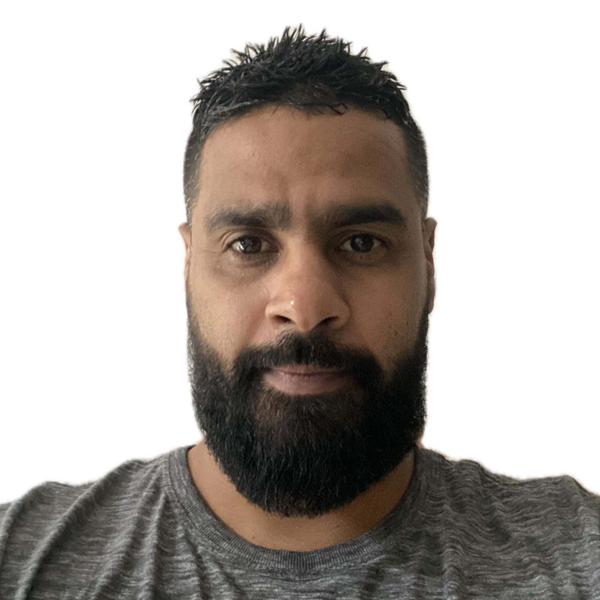

Desenvolvedor Full Stack atuando na ARSAL — Agência Reguladora de Serviços Públicos de Alagoas, criando APIs seguras, fluxos de upload e streaming de mídia, e interfaces em Angular que entregam valor real para uma agência pública. Antes disso, 9 anos resolvendo problemas complexos de infraestrutura e atendendo clientes — hoje aplicados a escrever código limpo e pensar como o usuário final.

APIs REST robustas com arquitetura em camadas, persistência e segurança de dados.
Interfaces reativas, tipadas e organizadas em componentes reutilizáveis.
Modelagem, consultas otimizadas e manutenção evolutiva em ambientes corporativos.
Código organizado, versionado e pensado para crescer sem virar dívida técnica.